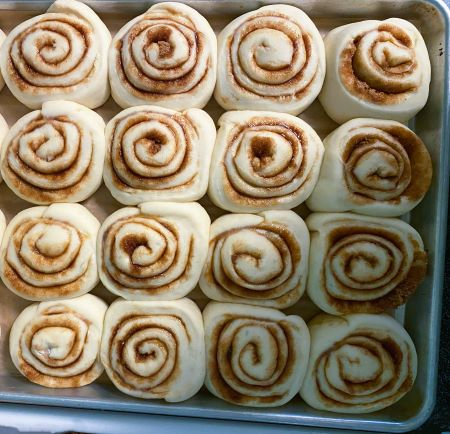
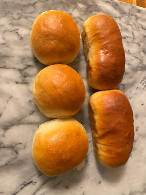

Benefits
Benefits to making your our baked good from home. First you know what is going into your food and there really isn’t any extra things in it that you found in the store and mass production baked goods so in turn you know what is going into your body as well. Second, homemade just tastes better. In recent years it seems like farmers markets and people selling their homemade baked goods have been on the rise. Third, you tend to not get that bloating sick feeling after you eat something you’ve made over want you have eaten from a box store. Four, it’s more cost effective if buy the main ingredients for bread dough, i.e. flour, oil, yeast and even salt in bulk you can make multiply things. I for one go through a 25lb bag of flour every 1-2 months but with that I can provide my family with bread, sweets and much more. I want to share the benefits I have seen in my family and myself in the last six years of making homemade baked goods over always buying from the store. You may think it’s hard to do but trust me it is easier than you think, and you can even have your children help which is an added benefit because they are learning a new skill.
 What you will see in your ingredients:
-- Sugar (example: coconut, cane, and monk fruit sugar, but there are many other substitutions)
-- Flour (I like to use unbleached flour ans most the time bread flour)
-- Yeast - There are many types of yeast dry active, instant, even sourdough (with sourdough you feed it water and flour to keep in alive and when using sourdough it tends to take longer to rise.)
-- Water - Most for the time I use filter or bottled water.
-- Oil/Butter - I tend to choose coconut oil over other oil, except when I make my hamburger buns i use butter and I have used avacado oil in a pinch.
-- Eggs - If you happento be allergic to eggs you could opt it out or substitute it with flexseed eggs
-- Any add-ins you would like (Shredded Cheese, Cinnamon Chips, Jalapenos)
Because I know what is going into my family's body. I am also able to give them sweets but I have control how much sugar goes into the food.